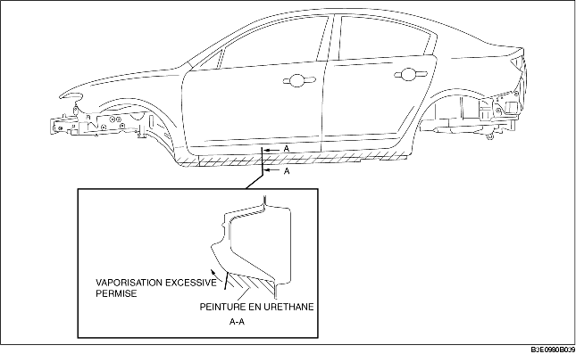
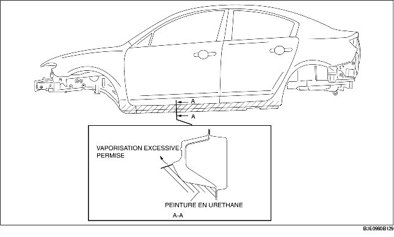
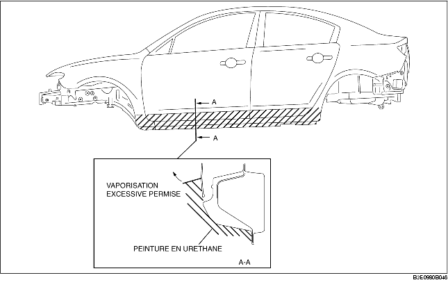

REVETEMENT DE RESISTANCE A L'ECAILLAGE
B3E098007000B04
Les emplacements des revêtements sont indiqués par les zones grisées.
Avec moulure d'étape latérale

Sans moulure d'étape latérale
Modèles (conduite à gauche, conduite à droite) généraux

A l'exception des modèles (conduite à gauche, conduite à droite) généraux
